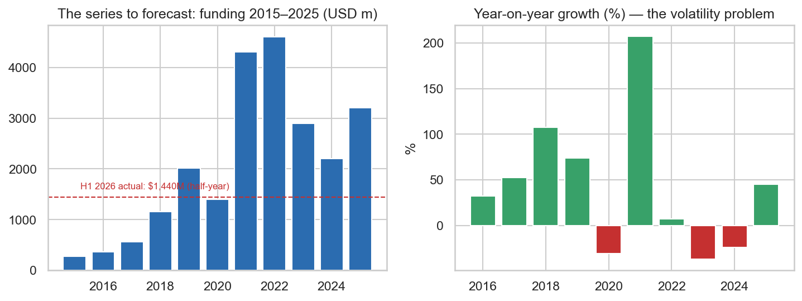
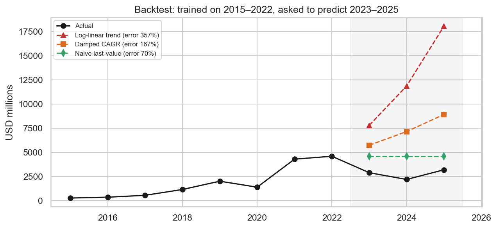
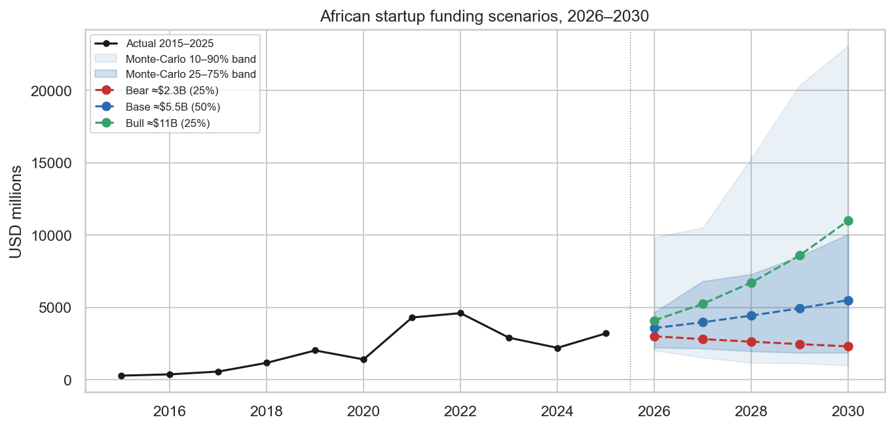
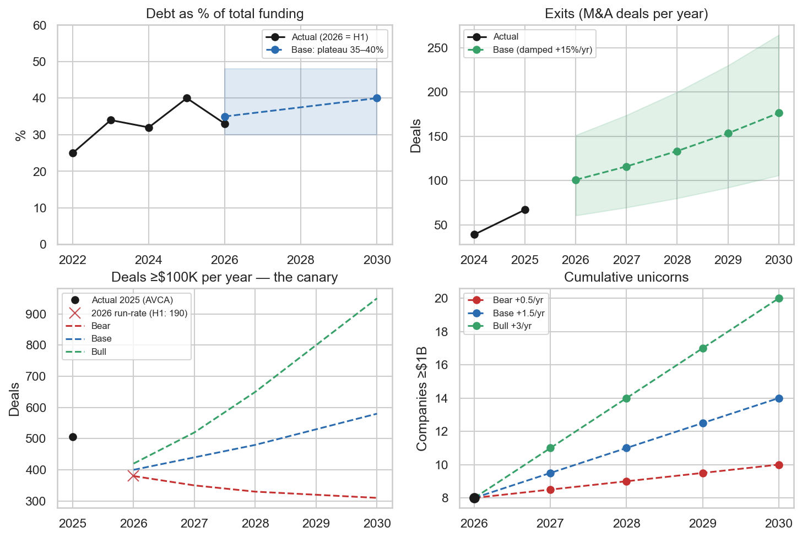
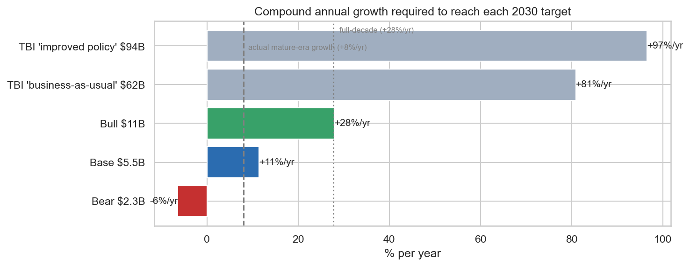

Executive summary
Africa 2030 is a consolidation story, not a moonshot story: the validated base case is roughly a doubling of the market, not a twentyfold explosion. This report forecasts every variable tracked in Report 1 and Report 2 over the period July 2026 to 2030: total funding, deal counts, debt share, exits, unicorns, geographic concentration and the gender funding gap. The base case (50% probability) puts annual funding at approximately $5.5 billion by 2030, alongside roughly 175 exits per year, about 15 cumulative unicorns, a stable 35% to 40% debt layer and Big Four concentration easing modestly to about 75% of capital.
Every forecast in this report was validated before being believed and the validation results discipline the entire exercise. A backtest (models trained on 2015 to 2022, asked to predict the 2023 to 2025 winter) shows that trend extrapolation fails catastrophically: the standard log linear growth model missed actual 2025 funding by a factor of nearly six (357% error), while a naive last value model was the most accurate. Monte Carlo simulation, an out of sample check against the published H1 2026 actuals ($1.44 billion, the model passes) and benchmarking against external projections complete the validation battery.
The much quoted $62 to $94 billion projections for 2030 would require 81% to 97% compound growth for five consecutive years, treat them as aspirations, not forecasts. History's best sustained growth stretch was roughly 28% per year (off a tiny base); the post boom market grows at about 8%. The optimistic headline numbers extrapolate pre 2021 growth rates, precisely the method the backtest discredits.
The single most robust forecast is exits; the single most important warning is the shrinking deal count. M&A grew from 39 deals (2024) to 67 (2025) to 63 in the first half of 2026 alone, consolidation thrives even when funding is scarce, making roughly 175 exits per year by 2030 the most defensible projection in this report. Meanwhile deal counts are contracting (H1 2026 annualises to about 380 versus 506 in 2025): today's missing seed cheques are 2030's missing Series A companies and this is the indicator most likely to convert the base case into the bear case.
01Introduction and background
The trilogy closes by looking forward, with the humility the data demands. Report 1 diagnosed the 2014 ecosystem; Report 2 measured the 2014 to 2026 transformation. This report projects 2026 to 2030. The forecasting problem is unusually hard: the funding series has eleven annual observations containing a 3x boom and a 46% crash, both driven by global forces no African dataset could predict. The report therefore treats validation as the product, not a footnote: every projection survives (or is disciplined by) four independent checks before interpretation.
Forecasts here are decision tools for investors, not predictions of fate. The deliverable is a set of bear, base and bull scenarios with explicit drivers, probabilities and monitoring indicators, so that a fund manager, DFI or policymaker can position for the base case while knowing exactly which signals would announce the alternatives.
02Objectives
The report pursues four objectives. First, to forecast total African startup funding to 2030 with honest uncertainty bands. Second, to forecast each component variable from the earlier reports: debt share, deal counts, exits, unicorns, Big Four concentration and female CEO funding share. Third, to validate all projections through backtesting, out of sample checks against H1 2026 actuals and external benchmarks. Fourth, to translate the scenarios into investor guidance and a monitoring dashboard of leading indicators.
03Data and methodology
3.1 The series and its regimes
The forecast base is the 2015 to 2025 series assembled in Report 2, anchored by the H1 2026 actuals published in July 2026. The series splices Partech equity figures (2015 to 2018, the only tracker for those years) onto Africa: The Big Deal's equity plus debt series (2019 to 2025). H1 2026 actuals ($1.44 billion, essentially flat year on year, across just 146 disclosed rounds versus 252 a year earlier) provide a live out of sample anchor. Two growth regimes emerge from the data: the full decade (about up 28% per year, inflated by low base hypergrowth) and the mature era from 2019 onward (about up 8% per year, spanning a full boom bust cycle). Choosing between them is the central forecasting decision and the backtest in Section 4.2 makes the choice empirical.
3.2 Methods
Three methods are combined, each compensating for the others' weaknesses. (1) Backtesting: three candidate models, log linear trend, damped CAGR and naive last value, are trained on 2015 to 2022 and scored on their 2023 to 2025 predictions. (2) Monte Carlo bootstrap: 10,000 five year paths are simulated by resampling observed year on year log growth rates, preserving the boom and bust asymmetry and yielding probability bands rather than a single line. (3) Scenario construction: bear, base and bull narratives with explicit drivers are located inside the Monte Carlo distribution so they inherit statistical discipline. Component variables with too few observations for any model (unicorn arrivals, gender share) use transparent scenario logic instead of spurious curve fitting.
3.3 Data protection
As throughout the trilogy, no personal data is processed. All inputs are aggregate market statistics from published reports; the full ethics statement appears in Annexure C.
04Findings and analysis
All modelling and analysis in this section was designed and conducted by Michael Omega. The companion notebook (African_Startups_Forecast_2026_2030.ipynb) reproduces every simulation with fixed random seeds.
4.1 The forecasting problem
The series to be forecast is short, volatile and regime switching, conditions under which overconfident models do the most damage. The series and its year on year growth rates tell the story: a up 207% year (2021) sits four years from a down 37% year (2023) and the standard deviation of log growth in the mature era alone is 0.55. Any model that averages these into a smooth trend is destroying the very information, violent cyclicality, that most affects investor outcomes.

4.2 Validation check 1: the backtest
Asked to predict the 2023 to 2025 funding winter from 2015 to 2022 data, the standard growth model failed by a factor of six and that failure dictates this report's design. The log linear trend model, trained through the boom, predicted $18 billion for 2025 against an actual $3.2 billion (357% mean error). The damped CAGR model still erred by 167%. The naive model, simply carrying the last value forward, was the most accurate (70% error). Three design rules follow: anchor forecasts on the latest level, not the decade trend; treat growth as a distribution to sample from, not a constant; and report intervals and scenarios, never a single line.

4.3 The core forecast: Monte Carlo bands and scenarios
The validated base case puts 2030 funding at approximately $5.5 billion, inside a deliberately wide probability band. The 10,000 bootstrap simulations from the mature era growth regime give a 2030 median of about $4.3 billion, with a 25% to 75% band of roughly $1.9 to $10 billion. Three scenario paths are drawn inside the band: bear about $2.3 billion (25% probability, tight global liquidity, recurring FX crises, continued early stage contraction), base about $5.5 billion (50%, mature era growth plus the structural tailwinds of debt, exits and local capital) and bull about $11 billion (25%, global easing plus an IPO unlock and pension fund participation). The upside tail stretches further than the downside: venture markets crash by halves but grow by multiples.

Validation check 2: the model survives contact with 2026. Applying 2025's second half seasonality to the published H1 2026 actual ($1.44 billion) yields a full year nowcast of about $3.2 billion, a flat year. That value sits at the 50th percentile of the model's first forecast year: the forecast and the incoming data agree. Qualitatively too, H1 2026 (flat value on collapsing deal count, rescued by one $270 million cleantech mega deal, Spiro) is the signature of the disciplined consolidation regime the model assumes, not a new boom.
4.4 Component forecasts
Each component variable is forecast with the same philosophy: anchor on the latest level, damp the trend, show the range. Four quantitative components stand out. Debt share plateaus at 35% to 40% of funding, structural because asset heavy cleantech and lending fintechs need it, capped because it is collateral constrained. Exits are the strongest trend in the dataset, 39, then 67, then 63 in half of 2026 and project to roughly 175 per year by 2030 even with heavy damping. Deal counts are the warning: the 2026 run rate of about 380 deals is well below 2025's 506 and the bear path assumes this contraction persists. Unicorns are modelled as arrival rates: up 0.5 per year (bear) to up 3 per year (bull), for roughly 10 to 23 cumulative by 2030 with 15 as the base.

Concentration and the gender gap are forecast as scenario ranges because their series are short and trendless. Big Four concentration (82% of 2025 funding) eases to about 75% in the base case, de concentration must be earned by the francophone corridor and DFI frontier mandates, while the bear case sees flight to safety pushing it toward 88%. The female CEO funding share (2.0% to 2.2% in 2024 and 2025) reaches only about 3.5% by 2030 in the base case; nothing in the record justifies predicting organic improvement and the bull case (about 7%) explicitly requires deliberate gender lens vehicles at scale. Sector wise, cleantech holds the top capital spot in the base case (it took number 1 in 2025 and supplied 2026's largest round), fintech retains leadership in revenue and unicorn production and AI remains a wildcard attracting attention but not yet capital at scale.
4.5 Validation checks 3 and 4: external benchmarks and sanity tests
The widely quoted $62 to $94 billion projections for 2030 fail the arithmetic test that this report's scenarios pass. The compound annual growth each 2030 target requires from the 2025 base of $3.2 billion is revealing. The Tony Blair Institute's business as usual ($62B) and improved policy ($94B) projections require up 81% and up 97% per year sustained for five years; history's best sustained stretch was about up 28% (off a base fifty times smaller) and the post boom market grows at up 8%. This report's bear, base and bull targets require down 6%, up 11% and up 28% respectively, all within historical experience. The $62 to $94B figures are best read as aspirational policy targets, not forecasts.

Two structural sanity checks support the base to bull range without supporting the moonshot. First, global share: a $5.5 billion Africa against a global venture market of roughly $350 to $450 billion implies about 1.4% of global VC by 2030, versus roughly 1% today, a modest, credible share gain for a continent holding 18% of world population. Second, the Southeast Asia analogue: SEA went from about $1 billion (2015) to $8 to $12 billion (2021 and 2022) before resetting to $4 to $8 billion; the base case puts Africa in 2030 where SEA sat around 2019 and 2020, consistent with the roughly seven year lag observed on every other metric (unicorns, exits, debt). Demand side projections, GSMA's mobile economy path to $290 billion of GDP contribution by 2030 and fintech revenue projections of $47 to $65 billion, argue against the bear case persisting, but the capital market plumbing (the deal count canary) could deliver it anyway.
05Discussion
The master table condenses the trilogy's forward view into one page. Table 1 lists every variable with its latest actual and its 2030 bear, base and bull values, with the method noted. Read as a whole, it describes an ecosystem whose composition keeps maturing faster than its size: even in the bear case, exits keep rising and debt remains structural; even in the bull case, funding stays around 2% to 3% of global VC.
Table 1: Master forecast, every tracked variable, latest actual to 2030 scenarios.
| Variable | Latest actual | Bear (25%) | Base (50%) | Bull (25%) | Method |
|---|---|---|---|---|---|
| Total funding ($B/yr) | 3.2 to 4.1 | about 2.3 | about 5.5 | about 11 | Monte Carlo + scenarios |
| Deals of $100K+ (per yr) | 506 | about 310 | about 580 | about 950 | Run rate + scenarios |
| Debt share of funding | 40% | 25 to 30% | 35 to 40% | 40 to 48% | Plateau logic |
| Exits / M&A (per yr) | 67 | about 75 | about 175 | about 250 | Damped up 15% per yr |
| Cumulative unicorns | 8 | about 10 | about 15 | about 23 | Arrival rate scenarios |
| Big Four funding share | 82% | about 88% | about 75% | about 68% | Scenario logic (sticky) |
| Female CEO funding share | 2.2% | about 2% | about 3.5% | about 7% | Scenario logic |
| Top sector by capital | Cleantech | Fintech | Cleantech | Fintech + AI | Qualitative |
Three conclusions carry the interpretive weight. First, the ecosystem's engine is rotating from funding to liquidity: an Africa producing 150 to 200 exits a year by 2030, two thirds bought by African acquirers, solves from the inside the deepest pathology of the 2014 dataset (a 1% exit rate), the flywheel Report 1 said was missing is now the most predictable part of the forecast. Second, the 2030 risk sits at the bottom of the ladder, not the top: the deal count contraction is Report 1's missing middle resurfacing one rung lower and if it persists to 2028 it guarantees the bear case with a lag. Third, the binding constraints are now identifiable, financial and monitorable (global rates, FX regimes, domestic institutional capital, IPO absence), which is why this report ends with a dashboard rather than a prophecy.
A monitoring dashboard turns the forecast into a living tool. Table 2 lists the six leading indicators that will announce which scenario is unfolding, with the bear and bull signals for each. Investors should re score this table quarterly; the companion notebook re runs the full simulation in minutes as new data arrives.
Table 2: Leading indicators to monitor, 2026 to 2030.
| Indicator | Bear signal | Bull signal | Where to check |
|---|---|---|---|
| Deals $100K+, rolling 12m | under 350 | over 550 | Africa: The Big Deal (monthly) |
| First African unicorn IPO | Delayed past 2028 | OPay or peer lists by 2027 | Financial press |
| Debt share of funding | over 50% (credit drift) | Stable 35 to 45% | Partech annual report |
| Foreign acquirer share of exits | Rebounds above 50% | At or below about 35% | TechCabal Insights |
| Nigeria funding, year on year | Third straight negative year | Macro stabilisation rebound | Partech / Big Deal |
| US policy rate path | Higher for longer | Sustained easing | US Federal Reserve |
06Recommendations
- Position for the base case; insure against the bear; keep optionality on the bull.
Build portfolios that work at $5.5 billion of annual market funding (disciplined entry prices, follow on reserves, revenue quality companies), stress test them at $2.3 billion (runway to 2028, debt lines secured early) and hold instruments that capture a bull repricing (secondaries, pre IPO exposure to the unicorn class).
- Be counter cyclical at seed, now.
The deal count contraction means the least competition and the greatest structural impact per dollar sit at the earliest stage. A seed vehicle deployed in 2026 and 2027 buys the exact pipeline the 2029 and 2030 Series A market will lack.
- Build credit skill or partner for it.
With debt structurally at 35% to 40% of the market, funds without credit underwriting capability are locked out of nearly half the opportunity and mispriced credit is the likeliest source of the ecosystem's next scandal.
- Treat the exit market as an asset class of its own.
Consolidation at 100 to 200 deals a year creates systematic opportunities: roll up strategies, secondary purchases from 2016 to 2021 vintage funds needing DPI and advisory positioning around the unicorns' acquisition programmes.
- Fund the gender gap deliberately.
The base case leaves female led startups at about 3.5% of funding; only purpose built vehicles change that line and they buy the least competed deal flow on the continent while doing so.
07Limitations
- Eleven observations cannot be modelled into certainty and the wide bands are themselves the finding. The bootstrap assumes 2019 to 2025 growth dynamics persist; a structural break, an African AI boom, a continental debt crisis, invalidates the bands in either direction.
- The series splices two trackers (levels before and after 2019 are not perfectly comparable), all amounts are nominal USD, scenario probabilities are judgmental and the component forecasts for unicorns, gender and concentration rest on very short series and are presented as transparent scenario logic rather than statistical estimates.
- Anyone selling a precise 2030 number is extrapolating; this report's honesty about uncertainty is what makes its central numbers usable.
08Conclusion
So what does 2030 look like? A market twice today's size, producing its own buyers, its own credit and, finally, its own liquidity. The trilogy began with 194 companies and a broken ladder; it ends with a validated projection of a $5.5 billion annual market with 175 exits a year and 15 unicorns by 2030. The moonshot numbers in circulation do not survive validation and they are not needed: an African venture market that doubles while installing exits, credit and local capital is a better investment environment than one that quintuples on imported liquidity and collapses again. The continent is heading somewhere unglamorous and valuable, toward a functioning capital market. Investors who understand that trajectory and monitor the six indicators that could bend it are the ones the 2030 retrospective will call early.
AAnnexure A: Model specifications
Backtest. Candidates: log linear OLS on log(funding); damped CAGR (last value grown at half the 2015 to 2022 geometric mean rate); naive last value. Training window 2015 to 2022; test window 2023 to 2025; metric: mean absolute percentage error (MAPE). Results: 357% / 167% / 70% respectively.
Monte Carlo bootstrap. 10,000 paths of five years; each year's growth drawn with replacement from observed log growth rates (mature era: 2020 to 2025 observations); start value $3.2B (2025 actual); fixed random seed 42. Reported percentiles for 2030 (mature regime): p10 about $1.0B, p25 about $1.9B, p50 about $4.3B, p75 about $10.1B, p90 about $23.1B.
Nowcast. FY2026 estimated as H1 2026 actual ($1.44B) times one plus 2025's H2 to H1 ratio (about 1.25), giving about $3.2B; this value falls at the 50th percentile of the model's simulated 2026 distribution.
BAnnexure B: Scenario assumptions
| Scenario | Probability | Macro assumptions | Ecosystem assumptions |
|---|---|---|---|
| Bear | 25% | Tight global liquidity; recurring FX crises; risk off toward frontier markets | Early stage pipeline keeps shrinking; local capital fails to scale; foreign acquirers retreat further |
| Base | 50% | Gradual global easing; FX stabilisation in key markets | Debt rail stable at 35% to 40%; exits compound about 15% per yr; slow local capital growth; francophone corridor matures |
| Bull | 25% | Sustained global easing; EM risk appetite returns | IPO unlock (OPay class listings); pension fund allocations open; AfCFTA driven regional scale ups |